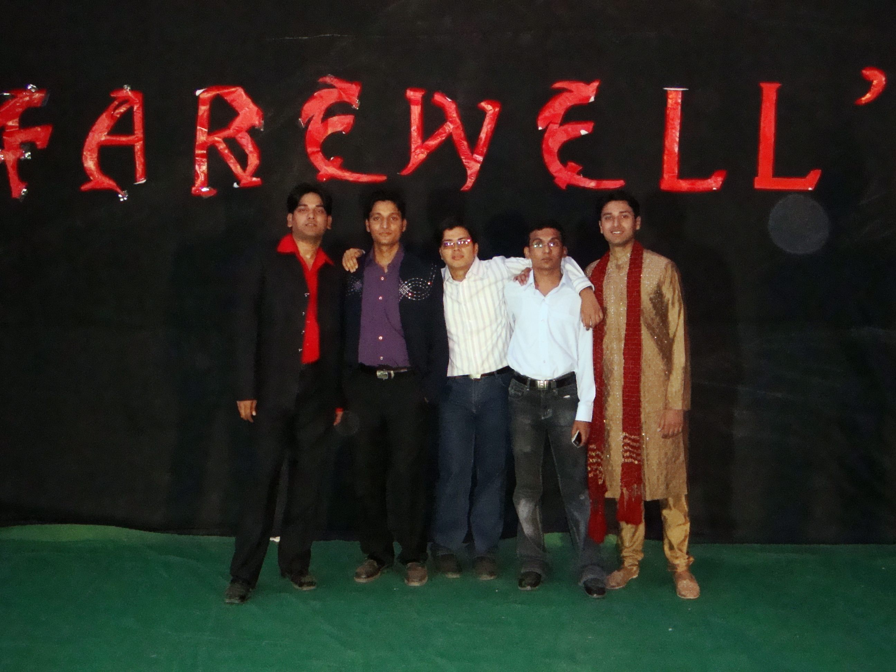
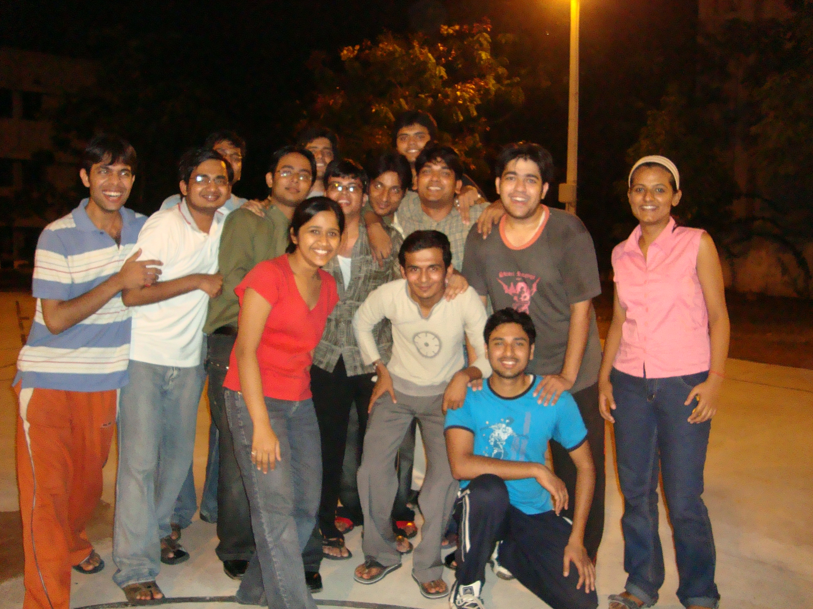
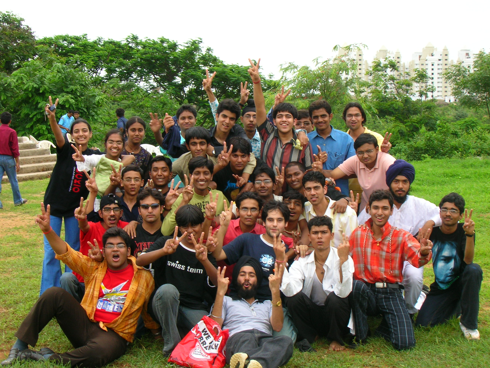

The Yearbook - Commemorating 2005-09!
Aditya Singal's profile information
Name - Aditya SingalBirthday - 30 Jan, 1987
Email - adityasingal.23@gmail.com
Address - #527/2, Gandhi Lane, College Road, Civil Lines, Ludhiana, Punjab - 141001
Phone - 9949503878
Hobbies - Movies, comics...
Testimonials written by Aditya Singal
Aditya Singal's Album

{kind=link}
Farewell '09

{kind=link}
Birthday on BB court

{kind=link}
Freshers '05
Testimonials
Abhinav Parashar wrote-Adi bhai ... the body builder ....
Bhai kam bolta hai .... Came to know him more ... when we took Sanskrit course together.
He is really sensible, hard working and friendly guy.
Wish u a bright future ahead. Stay in touch .
 .
.
May god bless
Abhishek Sainani wrote-
A Disney's fan like me. The first significant thing I remember about him is that he collected movies in DVDs. First time I went to his room was to ask for a movie.
 He gave me the DVD, said sambhaal ke handle kariyo. He keeps his DVDs bade pyaar se... good work dude, you inspired me to collect movies in DVDs.
He gave me the DVD, said sambhaal ke handle kariyo. He keeps his DVDs bade pyaar se... good work dude, you inspired me to collect movies in DVDs.
We've had some good conversations in mess during meal time and I still remember your laugh on sometimes some things I say. It was great knowing you.
All the best for future, I'm sure it'd be much better, although not the same as these college days!
Nitin Jain wrote-
Ab sab ke naam pad gae the to ye kaise bachte to inka naam adi,paddy rakh dia gaya

Yeh mera gym guru hai. Mujhe gym ka dedication inhi se aaya jab in hone 3 mahine mein apni kayapalat kar li
 . Kaafi shaant bandha hai. BC bhi kam karta hai. Inhe Safai se bahut prem hai. Inki wife to bahut khush rahegi .
. Kaafi shaant bandha hai. BC bhi kam karta hai. Inhe Safai se bahut prem hai. Inki wife to bahut khush rahegi .
Bahut English movies dekhta hai aur saath hi saath write bhi kar leta hai DVD mein. English movies ka imdb hai. Abhi toh inke paas itna collection ho gaya hai ki ek dukaan khul jaae "Adi DVD center"
 .
.
Ye hamare ubharte hue singer hai. Abhi inke naam do gaane register ho gae hai-Rock on,Kal ho na.
Galti se bhi inse pange mat lena nahi to inki memory mein aapki photo chad jaaega . Aur yadi "Tu toh gaya" bol dia toh phir sahi mei bachke rehna
 .
.
Hamare finance council ke head hai. Inhone finance council ke lie kaafi dedication se kaam kia hai and bahut acche se manage bhi kia hai
 . Lekin Ms ka inhe koi ata pata nahi hai
. Lekin Ms ka inhe koi ata pata nahi hai  . Iska logics strong hai aur humne kaafi online events saath mei khele hai . Hamesha last moment mein padai karta hai lekin phir bhi phodta hai . Bandhe ki typing speed katli hain . He is a good teacher too.Isne hum punjabi gaane bhi shikaye hai. Namoona pesh hai- "Chandigarh kare ashiqui jat da jhaladhar aake kuch khake..."
. Iska logics strong hai aur humne kaafi online events saath mei khele hai . Hamesha last moment mein padai karta hai lekin phir bhi phodta hai . Bandhe ki typing speed katli hain . He is a good teacher too.Isne hum punjabi gaane bhi shikaye hai. Namoona pesh hai- "Chandigarh kare ashiqui jat da jhaladhar aake kuch khake..."
Khel khood mei bhi peeche nahi hai.Batch ka one of the fast bowler. TT ,Basketball (secret),volley ball(Ist year mein) bhi khelta hai. Hamesha madad karne ki lie taiyaar baitha rehta hai
.
Thnx for your helping hand and be always there with it. Best of luck for ur future.
Assi naal gale lag jaa
 ..
..
Sunil Soni wrote-
Aditya - ultimate "movie collections" ... this is what i always recollect as i hear his name ....
this guy has got a awesome n very different type of storing movies ... in a DVD ... he has got a huge n huge n huge collection of DVD's ....
u want any movie .... just knock his door ... adi @ ur service ....
this guy is very cool n i have heard about him about his "Mr.Dependable" attitude ...
also i have seen bit confused about his MS project n MS work .. dude ... hope u will pass out of IIIT very soon ... wish u d very best dude n keep rocking n keep going with d antique collection of movies
harshita wrote-
single !!
Atul Dwivedi wrote-
Singhal..and We both were in GHEB ...apan dono ne bahut saari baate ki hai..mai iske paas movies lene bahut baar jaa chuka hun ..!!
Laddu waddu lekar aata tha ..to mai sabse pahle khaane pahunch jata tha ...!!
Bande ka room kya saaf rahta hai ....apan log sath mein the batch trip mein ...Cards khele bahut ...
Banda padhai mein bhi mast hai....simple hai ..nice to talk ..
He looks sophisticated .. Very friendly and talktive
Ab baat ye hai bhai ki ..time ho raha hai ..3PM and mai aajkal jyada badai kar nahi pata logo ki isliye .... likh nahi paa raha
fir bhi ..likh deta hun ki ..tu proper database bana ke rakhta tha movies ka ...gr8
...we used to talk a lot in GHEB..lekin fir baad mein alag ho gaye..ab kabhi bhi baat karte hai ... masti se baat karte hia...that's the way to go
Enjoy your life I hope ki tu accha karein aage ..and Apni MS complete karein jaldi se jaldi
Karan wrote-
Adi and I worked together for the finances of Felicity '08 (along with Harsha, Rishi and Rohit). Now he was silently efficient and went about doing his job without any fuss. We did have our share of issues though, it was never a bed of roses. I guess finance is like that - the guys handling it have got to be a little strict. And thats where Harsha and I often failed to understand him.
Adi did some good work the next year also. Even before that, I remember him as the guy who handled all the finances for stalls. Some of my fav memories with him are the marathon meeting with Swati M'am and Chhaya, the discussions when Felicity '08's coffers were empty, the discussions after the Indian Ocean fiasco- the way he handled it etc. Cheers to all those memories mate!
Hope you get out of this place and into a money minting machine soon enough! May God bless.
Fav memory: The marathon finance meetings.
Peace.
Prateek G V wrote-
Punjab da Puttar a.k.a Muscle Man
Hai Muscular,
Hai Popular,
Hai muscular, Hai popular, Spectacular, He's a Bachelor (with MS degree)
But, Adi can't Dance Saala

And the reason he gives us why he avoids dancing is - Kings usually dont take part in dance events. Rather they love watching others dance.

He is sweet guy and offers help anytime you buzz him. His knowledge about movies is amazing. I love his DVD collection - He has been doing it right from the first year. The best movie critic if you ask me. He has read number of comic strips and watched millions of cartoon shows. He grasping power is immense.
. I had fun working with him during a course project but ultimately both got a C (but hume kaam tho kiya yaar) .Be the same and dont change. Piyush wrote-
Adi .. He was my room-mate in first year. Although I rarely stayed in the room for the whole first year .. there was a clean separation in our room .. his side was clean like anything .. you will see even his napkin folded nicely beside his pillow
... and my side was as messy as it can be. But seriousli ... this guy never complained ... atleast not in front of me
Newaz, hes a nice guy to be with .. does workout daily and has got a good shape .. kewl buddy
All the best for your future .. will remember you for first year
Subroto Sen wrote-
Adi .... hamare gang ka sabse bharosemand banda
, jab bhi koi help chahiyea ye hamesha ready rehta hai ... kisi ke BDay ka cake lana ho to tu hi jaata hai. Bahut patience hai issmein, Sudoku to just kuch hi mins mein solve kar deta hai. But ek bar agar koi ise "sardar" bol dia ... to ye bas yahi bolta hai "Tu to gaya", kabhi bhi kuch bolo to pehle mana kar deta hai, but aap ghabrao naa ... ye banda aapka kaam zaruur kar dega . Excellent fast learner, xam ke ek din pehle padh ke bhi fodd deta hai .. I really admire this quality in u , but guru ms ek din mein nahi hoti . Movies ka baadshah hai, kabhi ek-do dvd nahi khareedta, hamesha poora ka poora 100 DVD lee ke aata hai. Videos bhi bahut saare and diff types ke dekhta hai . Agar aap ise bol do k subah utha dena ... and fir agar aap na utho iske uthane se .. then bhool jao ke agle din ye wapis aapko uthane aayega ... khel kud mein cricket accha khelta hai .. but iske lie ek over mein 12 balls hote hai ... 6 balls theek + 6 balls wide ... Jo bhi hai isko mein kabhi tensed nahi dekha ... jaisa bhi hai waisa hi rahio ... u hav a very bright futue waiting for u. Best of luk .
Sachin wrote-
Aditya Singhal, a real gentleman around. Got to know him because of our similar taste for keeping movies in CDs and DVDs. If I need any movie, he is the first person, I ping to. Has much more movies with him than anyone in IIIT
. Not only he stores them, he is one of the silent d/lers of our batch. All most all of Meg ryan movies are d/led by him Gave me his rapidshare a/c for some movies I wanted to d/l. Apart from movies, he is good athlete . Cricket mein banda kya bowling karta hain, sidha CLEAN BOLD  . Is part of finance council. Seen him working with Rishi with much dedication and sincerity
. Is part of finance council. Seen him working with Rishi with much dedication and sincerity
I always find him during lunches and dinner, always there to give me company
All the best for your future and I will keep coming to you for all the movies whenever I come hyderabad

Will Miss U for :- Movie Database
Most Memorable moments : - Cricket in Felicity ground
Msg for U: - You Rock
Shashank Agrawal wrote-
Aditya ki wah bhai wah...
Yeh mere saath rehne wala hai isliye iske sirf tarif hi karoonga
Bande ki body-shody hai aur mast smart hai. Main isko hamesha bolta hoon utha dena main bhi body banaonga, par kehta hai - main nahi tujhe uthaonga Mujhe uthana majaak thode hi hai
Room itna saaf reha hai jitna bhagwan ka mandir nahi rehta hoga. Choice classic hai. Har ek item ekdum best. TT khelne ka apna style hai. Dar lagta hai jab shot marta hai - par mast shots marta hai
Koi bhi occasion ho, aditya enjoys himself and adds to the fun. Bande ki memory ki dag dene padege
Andar kya photocopy machine chalti hai
I look forward to having a great time with him.
Best wishes and lots of love
><
Richeek wrote-
Aaj to tu gaya!!! Bhai ko koi gali nahin de sakta nahin to vo chala jayega. Haan main kuch chand khush-naseebon main se hoon jinko Abhaydaan mila hua hai to thodi liberty mil jati hai. Aajkal luck acha chal raha hai bande ka, number mast aa rahe hain aur hamari taraf akal pada hua hai.
Bande ki memory or grasping power ultimate hai. Pahl logic thoda problemetic tha par mere tough
logical sawalon ki vajah se vo bhi strong ho gaya hai.
Adi ko safai bahut pasand hai. Ek baar ye dhobi ko gande kapde dene gaye to dhobi ki samajh main hi nahin aaya ki ye saaf, tah kiye hue, pressed kapde lekar kyon aaye hain
? Room aisa lagta hai ki kal hi liya ho to poora saaf karaya hai.
Iske dost kam hain kyonki ye jyada baatcheet nahin karta.
Doston ke liye har kaam karne ko tyar ho jayega haan kitne time main yeh is baat par depend karta hai ki apke chehre aur awaz main kitni urgency hai. By default answer NO hi rahta hai meri tarah
.
"Main Adi DVD bhandar" kholne ka plan hai iska Ludhiana main. Uske liye second year se collection bana raha hai.
Adi, Akash, Harh and myself hum log first year se saath hain. Adi Finance Council main hai aur kisi ne IIIT main abhi tak isse acha finance nahin sambhala. Yeh project ke liye ghar se jaldi nahin a sakte par hisab karne ke liye inhe jaldi aana tha ek baar
.
Bhai, MS ki taraf bhi nazr-e-inayat karo. Ek saal bacha hai, prof ko pakdo thode apne busy schedule main se time nikalkar research karo. Aur suno jab paper likho to second author main mera naam bhi dalna. All the best to you dost.
Saurav Khurana wrote-
adi is the epitome of friendship....i still remember when we met for the first tym...u were wid ur father in the queue for booking the hostel
rooms...standing tall with a smiling face....
i cannot recall a single tym when we disputed....
i have such fond memories with you....right from the trip to ocean park, winning first prize in the Ew project, diplaying another one for the Rnd showcase, batch trip , my brother's marriage, shopping, accompanying me to the hospital and so on.....
he wud travel the xtra mile to extend his helping hand to his friends
lykes idling his time with movies...(itni dvds hain iske pass jitni yo-buddies ke pass milla kar nahi hongi
), sudoko, comics,bc...
rarely gets angry...(i remember just one incident of that wid subz)....
i seriously wish that you start working for your MS..(before that he needs to finalise his guide
)...
i am blessed with god's grace to have a friend like you...wish that we remain frnds always
Kapil Bajaj wrote-
Contd.
Jaane Tu ya Jaane Na ke Jai ki tarah hai.... Iska ek bahut accha naam bhi hai "Madhumakhi ka chatha"... You know dude why...
Overall Banda Awesome hai.... Luckily yeh Hyderbad aya Punjab maine rahne ki jagah and we got to know him.... Hamein bhool mat jana Dost.... and Best of luck for your MS
Finally for you:
Kapil Bajaj wrote-
One of the most sophisticated guys of our batch aur mera sabse bada dushmann.
I am not joking..... Saale ne mujhe itna mara hai peeth par ab bhi yaad karta hoon to dard hota hai  ..... Pata hai mujhe sabse jayada khushi kab hui thi... when you told me that if I had filled ECE dual then you would be sitting in Punjab univ. njoing..... but I filled CSE and you are in dual degree....
..... Pata hai mujhe sabse jayada khushi kab hui thi... when you told me that if I had filled ECE dual then you would be sitting in Punjab univ. njoing..... but I filled CSE and you are in dual degree....
But frankly speaking he is one of the guys who can be titled as Mr. Dependable.... Likes watching movies a lot. Uske lappy maine dekhoge to 70% jagah to movies ne hi le rakhi hogi.... aur woh bhi stock type matlab aage ke dekhne ke liye rakhi hogi.... Time wastage nahin hona chahiye....
Iska DVD collection bhi awesome... Lagta hai lappy liya hi movies ke liye hai.... But aisa nahin hai ki sirf movies hi dekhta hai ab to Gym ja kar Body Builder bhi ban gaya hai .... aur phir hamein pahalwan bol ke chidata bhi hai... ... Pehle to hum javab de dete they but ab darr lagane laga hai....
Waise bahut hi cool banda hai.... kabhi bhi isko tension maine nahin dekha.... Jaane Tu ya Jaane Na ke
Akash Agrawal wrote-
Adi, mad about movies. Hamare kuch interests milte hai jese comics padna, tt khelna
. Vese comics padne ke mamle main mujh se bahut age hai. The best part is that he is in dual degree or haan hamare college ka Kuber hai abhi to Harsh wrote-
and of course I consider him to be my best friend. I dont even have a count of number of occasions when he has been there for me. Right from accompanying me whenever I have to go shopping to not sleeping and taking care of me when I was sick.
I sincerely thank god that he gave me a friend like him.
Harsh wrote-
Aditya as I say again and again is one of the most trust able person I have ever met. He can do anything for people he care about which may be his family or friends.
A person you can depend on when there is a need. Very fast in calculations and always irritating someone when not watching a movie.
!!
And of course students account se paise chahiye to iske bina woh kaam nahi ho sakta
!! I think 4th year ke un bahut kam logon main se hoga jinhone is saal ki bhi felicity main kaam kiya hoga !!